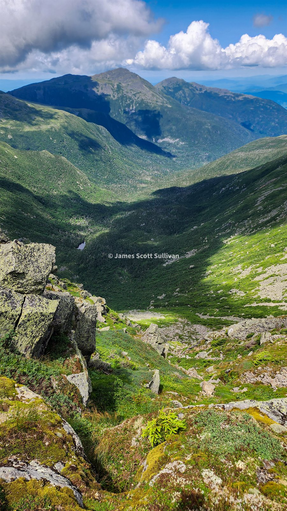

Standalone post
A Presidential Traverse
Still a little lost after the road trip, so I finally went after the Presi. Valley Way up north, Washington chaos in the middle, and the long southern ridge all the way out.

Presidential Traverse / White Mountains
Big range. Tired legs. Good reason to keep going.
The Whites know how to make a day feel full.